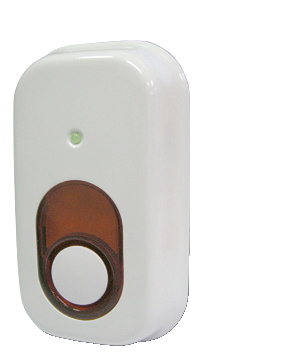
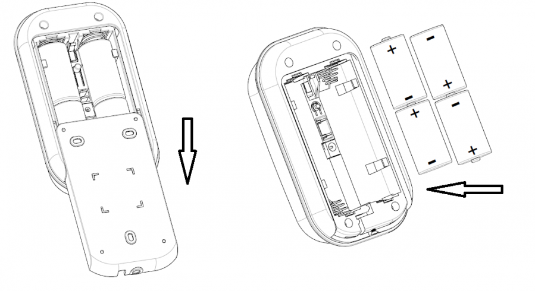
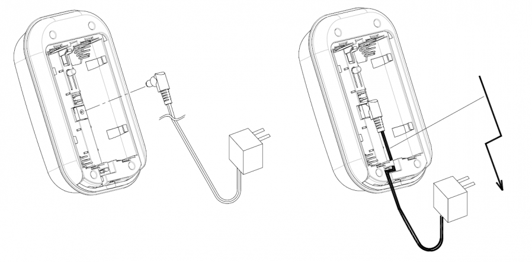
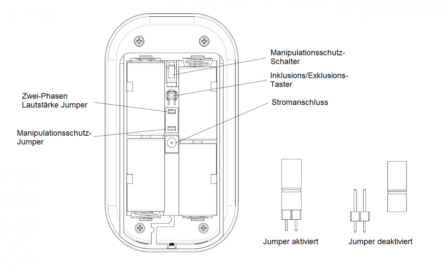
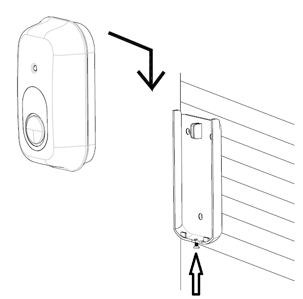

EVR_SE812
Firmware Version : 0.0 |
 |
Kurzinfo
A Dieses Gerät ist ein Z-Wave-Aktor. Drücken Sie zum Inkludieren oder Exkludieren der Sirene dreimal schnell hintereinander die Inklusions-/Exklusionstaste hinter der Batterieabdeckung.
Weitergehende Informationen finden sich in den jeweiligen Abschnitten dieses Handbuches.
Was ist Z-Wave?
Dieses Produkt entspricht dem Z-Wave-Standard. Z-Wave ist der internationale Funkstandard zur Kommunikation von Geräten im intelligenten Haus. Z-Wave-Geräte funken in Europa auf der Frequenz von 868.42 MHz.Z-Wave ermöglicht eine sichere und stabile Kommunikation indem jede Nachricht vom Empfänger rückbestätigt wird (Zweiwege-Kommunikation) und alle netzbetriebenen Geräte Nachrichten weiterleiten (Routing) können, wenn eine direkte Funkbeziehung zwischen Sender und Empfänger gestört ist.
Dank Z-Wave können Produkte unterschiedlicher Hersteller miteinander in einem Funknetz verwendet werden. Damit ist auch dieses Produkt mit beliebigen anderen Produkten anderer Hersteller in einem gemeinsamen Z-Wave Funknetz einsetzbar.
Z-Wave unterscheidet zwischen Controllern und Slaves. Slaves sind entweder Sensoren S, die Daten ermitteln oder Aktoren A, die Aktionen ausführen (Sensoren und Aktoren sind mitunter in einem Gerät vereint). Controller sind entweder statische netzgespeiste Controller C (auch IP-Gateways genannt) oder mobile batteriebetriebene Controller (Fernbedienungen, Batteriewandschalter)R. Damit ergeben sich eine Reihe prinzipieller Kommunikationsmöglichkeiten in einem Z-Wave-Netz:

- Controller steuern Aktoren.
- Aktoren melden Änderungen ihres Schaltzustandes
- Sensoren melden Messwerte oder Statusänderungen an Controller
- Sensoren steuern Aktoren direkt bei Ereignissen
- Aktoren steuern andere Aktoren
- Fernbedienungen erzeugen Ereignisse in einem statischen Controller, die zum Beispiel zum Steuern von Szenen genutzt werden
- Fernbedienungen steuern Aktoren
Controller können in einem Z-Wave Netzwerk zwei unterschiedliche Rollen einnehmen. Es gibt immer genau einen Primärcontroller der das Netzwerk steuert und Geräte in das Netzwerk inkludiert oder aus dem Netzwerk exkludiert. Dieser Controller kann weiter Nutzerfunktionen - zum Beispiel Tasten - besitzen. Alle anderen Controller mit Nutzerfunktionen erfüllen keine Managementaufgaben. Sie heißen Sekundärcontroller. Trotzdem verfügen sie - sozusagen als Backup - über alle notwendigen Informationen über das Netz. Das Übersichtsbild zeigt, das - batteriegestützt - Sensoren nicht direkt mit - batteriebetriebenen - Fernbedienungen kommunizieren. Sie senden nur Daten an statische Controller oder steuern Aktoren direkt.
Produktbeschreibung
Die Sirene SE812 warnt bei Auslösen eines Alarms jeden im Gebäude durch einen lauten Signalton - 90 db oder 100 db wählbar - und/oder blinkendes Licht. Dieses Produkt eignet sich insbesondere zur Nutzung in Kombination mit anderen Z-Wave Geräten wie Sensoren. Die Sirene wird durch Z-Wave Signale von Sensoren oder Controllern gesteuert, die dazu mit der Sirene assoziiert werden müssen. Sie ist ein batteriebetriebenes Gerät, kann aber auch durch ein externes Netzteil versorgt werden. Die Batterien können gewechselt werden, ohne dass die Befestigung des Gerätes gelöst werden muss. Das Gerät verfügt zusätzlich über eine Manipulationssicherung, die bei unbefugter Entfernung des Gerätes einen Alarm sendet.
Sicherheitshinweis
Lesen Sie dieses Handbuch vor der Installation!
Achtung! Dieses Gerät wird mit 230 V Netzspannung betrieben. Beachten Sie die Sicherheitshinweise während der Installation. Vor Beginn der Installation müssen alle Anschlussleitungen potentialfrei sein. Weiterhin muss sichergestellt sein, dass während der Installation niemand die Spannung wieder zuschalten kann (Sicherung wieder aktivieren). Elektrische Arbeiten dürfen nur von einer Elektrofachkraft in Übereinstimmung mit den geltenden Regeln und Vorschriften durchgeführt werden.
Verwenden Sie das Gerät auf keine andere Weise als im Handbuch angegeben. Der Hersteller übernimmt keine Garantie für unsachgemäße Bedienung.
Installationsanleitung
1. Lösen Sie die Verriegelungsschraube am unteren Ende des Gerätes und öffnen Sie die Batterieabdeckung.
2. Legen Sie die vier LR14 1.5V Batterien, wie auf der Abbildung zu sehen, in das Batteriefach ein.

3. Das Gerät kann auch mit dem optional erhältlichen Netzteil betrieben werden. Im Gehäuse des Gerätes ist wie nachfolgend abgebildet ein Kabelkanal ausgespart. Schließen Sie das Netzteil an der vorgesehenen Buchse an und verlegen das Kabel wie in der Abbildung.

4. Das Gerät bietet zwei Jumper zum Einstellen der Lautstärke und des Schutzschalters. Mit dem oberen Jumper stellen Sie die Lautstärke der Sirene ein (90db oder 100db). Mit dem unteren Jumper aktivieren oder deaktivieren Sie den Manipulationsschutzschalter.

5. Die Batterieabdeckung dient gleichzeitig als Befestigungsplatte für das Gerät. Mit den im Lieferumfang enthaltenen Schrauben können Sie das Gerät einfach an einer Wand anbringen.

Verhalten des Gerätes im Z-Wave Netz
I Im Auslieferungszustand ist das Gerät mit keinem Z-Wave-Netz verbunden. Damit es mit anderen Z-Wave Geräten kommunizieren kann, muss es in ein bestehendes Z-Wave Netz eingebunden werden. Dieser Prozess wird bei Z-Wave Inklusion genannt. Geräte können Netzwerke auch wieder verlassen. Dieser Prozess heißt bei Z-Wave Exklusion. Beide Prozesse werden von einem Controller gestartet, der dazu in einen Inklusion- bzw. Exklusion-Modus geschaltet werden muss. Das Handbuch des Controllers enthält Informationen, wie er in diese Modi zu schalten ist. Erst wenn der Controller des Z-Wave Netzes im Inclusion-Modus ist, können Geräte hinzugefügt werden. Das Verlassen des Netzes durch Exklusion führt zum Rücksetzen dieses Gerätes in den Auslieferungszustand.
Bei der ersten Inbetriebnahme des Gerätes ist es noch nicht in ein Z-Wave Netz inkludiert und hat keine assoziierten Geräte. Es bleibt für 10 Minuten im aufgeweckten Zustand, um die Konfiguration zu ermöglichen.
1. Inklusion: Zum Inkludieren bringen Sie zuerst Ihren Z-Wave Controller in den entsprechenden Zustand und drücken anschließend dreimal kurz hintereinander die Inklusions-/Exklusionstaste. Die grüne LED leuchtet auf und die Sirene piept, wenn der Taster gedrückt wird.
2. Exklusion: Zum Exkludieren bringen Sie zuerst Ihren Z-Wave Controller in den entsprechenden Zustand und drücken anschließend dreimal kurz hintereinander die Inklusions-/Exklusionstaste. Die grüne LED leuchtet auf und die Sirene piept, wenn der Taster gedrückt wird.
3. Reset: Um den Reset-Modus zu aktivieren, drücken Sie die Inklusions/Exklusionstaste dreimal kurz hintereinander. Drücken sie dann innerhalb von einer Sekunde die Taste erneut für 5 Sekunden, bis die LED erlischt. Das Gerät ist nun auf Werkseinstellungen zurückgesetzt. Dabei erlischt die orange LED und die Sirene piept für 5 Sekunden.
4. Assoziieren: Zum Assoziieren bringen Sie zuerst Ihren Z-Wave Controller in den entsprechenden Zustand und drücken anschließend dreimal kurz hintereinander die Inklusions-/Exklusionstaste, um die Sirene in den Assoziations-Modus zu bringen. Das Gerät unterstützt bis zu 5 Geräte in der Assoziationsgruppe.
Bedienung des Gerätes
Selbstschutz-Modus: Wenn der Manipulationsschutzschalter aktiviert ist und das Gehäuse des Gerätes für mindestens 3 Sekunden geschlossen ist, wird der Alarm beim gewaltsamen Öffnen des Gerätes für 3 Minuten aktiviert. Wenn das Gerät im normalen Modus ist und ein assoziiertes Gerät einen Alarm auslöst, wird die Sirene und das Blinklicht aktiviert.
Kommandoklassen
Unterstützte Kommandoklassen- Alarm (Version 1)
- Association (Version 2)
- Basic (Version 1)
- Battery (Version 1)
- Binary Switch (Version 1)
- Manufacturer Specific (Version 1)
- Version (Version 1)
Technische Daten
| Explorer Frames | Nein |
| SDK | 5.02 pl2 |
| Geräteart | Slave with routing capabilities |
| Allgemeiner Z-Wave-Gerätetyp | Binary Switch |
| Spezieller Z-Wave-Gerätetyp | Specific Device Class not used |
| Router | Nein |
| FLiRS | Nein |
| Firmware Version | 0.0 |
Erläuterung Z-Wave-spezifischer Begriffe
- Controller... ist ein Z-Wave-Gerät mit erweiterten Fähigkeiten zur Verwaltung eines Netzes. Dies sind in der Regel Gateways oder Fernbedienungen. Batteriegespeiste Wandschalter können auch Controller sein.
- Slave... ist ein Z-Wave-Gerät mit erweiterten Fähigkeiten zur Verwaltung eines Netzes. Es gibt Sensoren, Aktoren und auch Fernbedienungen als Slaves.
- Primärcontroller (engl. Primary Controller)... ist der zentrale Netzverwalter des Z-Wave-Netzes.
- Inklusion (eng. Inclusion)... ist der Prozess des Einbindens eines neuen Gerätes ins Z-Wave-Netz.
- Exklusion (engl. Exclusion)... ist der Prozess des Entfernens eines Gerätes aus dem Z-Wave-Netz.
- Assoziation (engl. Association)... ist eine Steuerbeziehung zwischen einem steuernden und einem gesteuerten Gerät. Die Information dazu wird im steuernden Gerät in einer Assoziationsgruppe hinterlegt.
- Wakeup Notifikation (engl. Wakeup Notification) ... ist eine spezielle Funknachricht, mit der ein batteriegespeistes Gerät bekanntmacht, daß es im Aufwachstatus ist und Z-Wave-Nachrichten empfangen kann.
- Node Information Frame... ist eine spezielle Funknachricht, mit der ein Z-Wave-Gerät seine Geräteeigenschaften bekanntgibt.
Entsorgungshinweis
Dieses Gerät enthält keine Batterien.
Das ist ein elektrisches Gerät. Es kann kostenfrei bei entsprechenden Annahmestellen abgegeben werden.